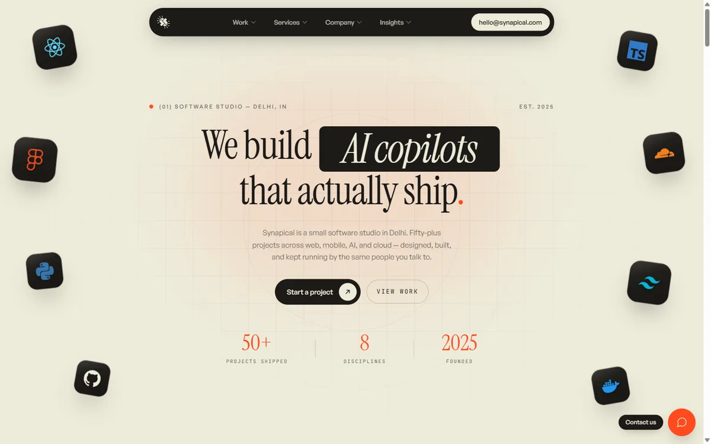
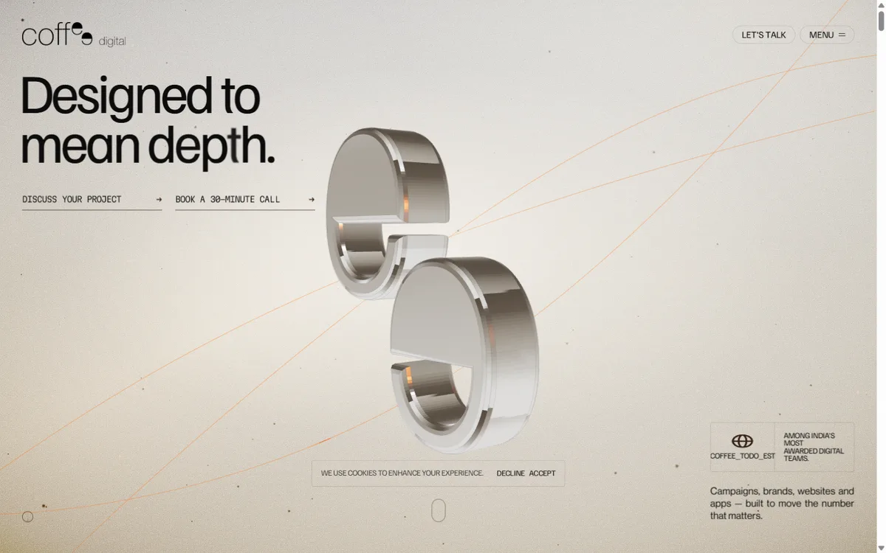
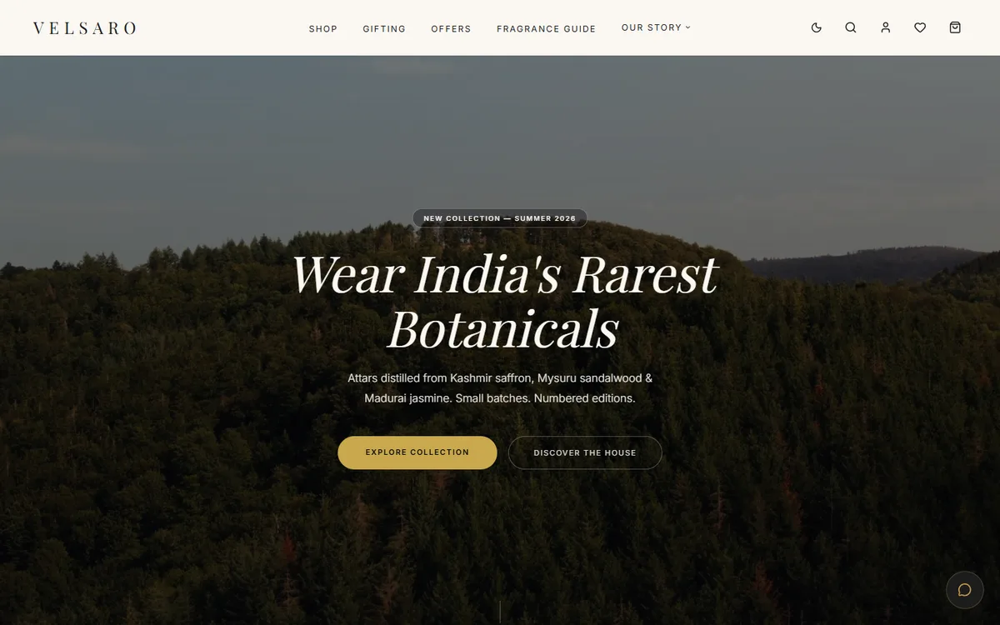

Work
Selected work.
Three client sites that are live right now, and the open-source tools I build between them. Everything here links to the real thing.

Synapical
Summer 2025 as a junior developer at Synapical, a studio building web apps, AI copilots and cloud infrastructure. Worked on its products, including Getcited, an audit tool for visibility in AI search.
synapical.com ↗
Coffee Digital
The website for a full-stack marketing, creative and technology agency: a motion-led site with real-time 3D, built in TypeScript.
coffeedigital.vercel.app ↗
Velsaro
A storefront for fragrances made from Indian botanicals: collection pages, a fragrance guide, gifting, and a founding-list signup ahead of launch.
velsaro.in ↗Open source
Built in public.
Tools and experiments from github.com/harsh4k. Stars and descriptions as of September 2026.
Daily dev and activity report for Windows. Pure PowerShell, no dependencies, all data stays local.
GetcitedAudits websites for visibility in AI search and gives practical recommendations for LLM-era SEO.
nexcartA full-stack e-commerce platform built on a scalable architecture.
osynkA productivity platform for workflow automation and task organisation.
edithReal-time system monitor for CPU, GPU and RAM usage.
portfolio-v2Personal portfolio covering projects, skills and the road so far.